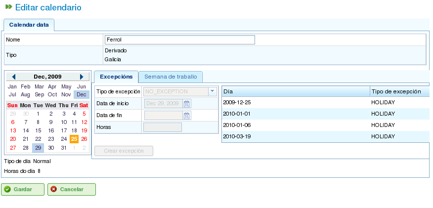

Kalendáře
Contents
Kalendáře jsou entity v programu, které definují pracovní kapacitu zdrojů. Kalendář se skládá z řady dní v průběhu roku, přičemž každý den je rozdělen na dostupné pracovní hodiny.
Například státní svátek může mít 0 dostupných pracovních hodin. Naopak typický pracovní den může mít 8 hodin označených jako dostupný pracovní čas.
Existují dva hlavní způsoby definování počtu pracovních hodin v daném dni:
- Podle dne v týdnu: Tato metoda stanoví standardní počet pracovních hodin pro každý den v týdnu. Například pondělky mohou mít standardně 8 pracovních hodin.
- Výjimkou: Tato metoda umožňuje specifické odchylky od standardního rozvrhu pro den v týdnu. Například pondělí 30. ledna může mít 10 pracovních hodin, čímž přepíše standardní pondělní rozvrh.
Správa kalendářů
Systém kalendářů je hierarchický a umožňuje vytváření základních kalendářů a odvozování nových kalendářů z nich, čímž vzniká stromová struktura. Kalendář odvozený z nadřazeného kalendáře zdědí jeho denní rozvrhy a výjimky, pokud nebyly explicitně změněny. Pro efektivní správu kalendářů je důležité pochopit následující pojmy:
- Nezávislost dní: Každý den je zpracováván nezávisle a každý rok má svou vlastní sadu dní. Například pokud je 8. prosince 2009 státní svátek, neznamená to automaticky, že 8. prosince 2010 je také státním svátkem.
- Pracovní dny podle dne v týdnu: Standardní pracovní dny jsou založeny na dnech v týdnu. Například pokud mají pondělky standardně 8 pracovních hodin, pak všechna pondělí ve všech týdnech všech let budou mít 8 dostupných hodin, pokud není definována výjimka.
- Výjimky a období výjimek: Lze definovat výjimky nebo období výjimek pro odchylku od standardního rozvrhu pro den v týdnu. Například můžete zadat jeden den nebo rozsah dní s jiným počtem dostupných pracovních hodin, než je obecné pravidlo pro tyto dny v týdnu.

Správa kalendářů
Správa kalendářů je přístupná přes menu "Správa". Odtud mohou uživatelé provádět následující akce:
- Vytvořit nový kalendář od základů.
- Vytvořit kalendář odvozený z existujícího.
- Vytvořit kalendář jako kopii existujícího.
- Upravit existující kalendář.
Vytvoření nového kalendáře
Pro vytvoření nového kalendáře klikněte na tlačítko "Vytvořit". Systém zobrazí formulář, kde můžete konfigurovat následující:
- Vyberte záložku: Zvolte záložku, na které chcete pracovat:
- Označení výjimek: Definujte výjimky ze standardního rozvrhu.
- Pracovní hodiny za den: Definujte standardní pracovní hodiny pro každý den v týdnu.
- Označení výjimek: Pokud vyberete možnost "Označení výjimek", můžete:
- Vybrat konkrétní den v kalendáři.
- Vybrat typ výjimky. Dostupné typy jsou: dovolená, nemoc, stávka, státní svátek a pracovní svátek.
- Vybrat datum ukončení období výjimky. (Toto pole nemusíte měnit pro jednodnevní výjimky.)
- Definovat počet pracovních hodin během dní období výjimky.
- Odstranit dříve definované výjimky.
- Pracovní hodiny za den: Pokud vyberete možnost "Pracovní hodiny za den", můžete:
- Definovat dostupné pracovní hodiny pro každý den v týdnu (pondělí, úterý, středa, čtvrtek, pátek, sobota a neděle).
- Definovat různá týdenní hodinová rozdělení pro budoucí období.
- Odstranit dříve definovaná hodinová rozdělení.
Tyto možnosti umožňují uživatelům plně přizpůsobit kalendáře jejich konkrétním potřebám. Klikněte na tlačítko "Uložit" pro uložení všech změn provedených ve formuláři.

Úprava kalendářů

Přidání výjimky do kalendáře
Vytváření odvozených kalendářů
Odvozený kalendář je vytvořen na základě existujícího kalendáře. Dědí všechny funkce původního kalendáře, ale můžete jej upravit tak, aby zahrnoval různé možnosti.
Běžným případem použití odvozených kalendářů je situace, kdy máte obecný kalendář pro zemi, jako je Španělsko, a potřebujete vytvořit odvozený kalendář pro zahrnutí dalších státních svátků specifických pro region, jako je Galicie.
Je důležité si uvědomit, že jakékoli změny provedené v původním kalendáři se automaticky přenesou do odvozeného kalendáře, pokud v odvozeném kalendáři není definována specifická výjimka. Například španělský kalendář může mít 8hodinový pracovní den 17. května. Galicijský kalendář (odvozený kalendář) však nemusí mít ten den žádné pracovní hodiny, protože je to regionální státní svátek. Pokud se španělský kalendář později změní tak, aby měl 4 dostupné pracovní hodiny za den pro týden 17. května, galicijský kalendář se také změní na 4 dostupné pracovní hodiny pro každý den v tom týdnu, s výjimkou 17. května, který zůstane nepracovním dnem kvůli definované výjimce.

Vytvoření odvozeného kalendáře
Pro vytvoření odvozeného kalendáře:
- Přejděte do menu Správa.
- Klikněte na možnost Správa kalendářů.
- Vyberte kalendář, který chcete použít jako základ pro odvozený kalendář, a klikněte na tlačítko "Vytvořit".
- Systém zobrazí editační formulář se stejnými vlastnostmi jako formulář použitý k vytvoření kalendáře od základů, s tím rozdílem, že navrhované výjimky a pracovní hodiny za den v týdnu budou vycházet z původního kalendáře.
Vytvoření kalendáře kopírováním
Zkopírovaný kalendář je přesným duplikátem existujícího kalendáře. Dědí všechny funkce původního kalendáře, ale můžete jej upravovat nezávisle.
Klíčový rozdíl mezi zkopírovaným kalendářem a odvozeným kalendářem spočívá v tom, jak jsou ovlivněny změnami v originálu. Pokud je původní kalendář upraven, zkopírovaný kalendář zůstane nezměněn. Odvozené kalendáře jsou však ovlivněny změnami provedenými v originálu, pokud není definována výjimka.
Běžným případem použití zkopírovaných kalendářů je situace, kdy máte kalendář pro jedno místo, například "Pontevedra", a potřebujete podobný kalendář pro jiné místo, například "A Coruña", kde jsou většina funkcí stejná. Změny v jednom kalendáři by však neměly ovlivnit druhý.
Pro vytvoření zkopírovaného kalendáře:
- Přejděte do menu Správa.
- Klikněte na možnost Správa kalendářů.
- Vyberte kalendář, který chcete kopírovat, a klikněte na tlačítko "Vytvořit".
- Systém zobrazí editační formulář se stejnými vlastnostmi jako formulář použitý k vytvoření kalendáře od základů, s tím rozdílem, že navrhované výjimky a pracovní hodiny za den v týdnu budou vycházet z původního kalendáře.
Výchozí kalendář
Jeden z existujících kalendářů může být označen jako výchozí kalendář. Tento kalendář bude automaticky přiřazen všem entitám v systému, které jsou spravovány s kalendáři, pokud není zadán jiný kalendář.
Nastavení výchozího kalendáře:
- Přejděte do menu Správa.
- Klikněte na možnost Konfigurace.
- V poli Výchozí kalendář vyberte kalendář, který chcete použít jako výchozí kalendář programu.
- Klikněte na Uložit.

Nastavení výchozího kalendáře
Přiřazení kalendáře zdrojům
Zdroje mohou být aktivovány (tj. mít dostupné pracovní hodiny) pouze tehdy, pokud mají přiřazený kalendář s platným aktivačním obdobím. Pokud není zdroji přiřazen žádný kalendář, výchozí kalendář je přiřazen automaticky, s aktivačním obdobím, které začíná od data zahájení a nemá datum vypršení platnosti.

Kalendář zdroje
Kalendář, který byl dříve přiřazen zdroji, však můžete odstranit a vytvořit nový kalendář na základě existujícího. To umožňuje úplné přizpůsobení kalendářů pro jednotlivé zdroje.
Pro přiřazení kalendáře zdroji:
- Přejděte na možnost Upravit zdroje.
- Vyberte zdroj a klikněte na Upravit.
- Vyberte záložku "Kalendář".
- Zobrazí se kalendář spolu s jeho výjimkami, pracovními hodinami za den a aktivačními obdobími.
- Každá záložka bude mít následující možnosti:
- Výjimky: Definujte výjimky a období, na která se vztahují, jako jsou dovolené, státní svátky nebo různé pracovní dny.
- Pracovní týden: Upravte pracovní hodiny pro každý den v týdnu (pondělí, úterý atd.).
- Aktivační období: Vytvořte nová aktivační období pro zohlednění počátečních a koncových dat smluv přidružených ke zdroji. Viz následující obrázek.
- Klikněte na Uložit pro uložení informací.
- Klikněte na Odstranit, pokud chcete změnit kalendář přiřazený zdroji.

Přiřazení nového kalendáře zdroji
Přiřazení kalendářů zakázkám
Projekty mohou mít jiný kalendář než výchozí kalendář. Změna kalendáře zakázky:
- Vstupte do seznamu zakázek v přehledu společnosti.
- Upravte příslušnou zakázku.
- Vstupte na záložku "Obecné informace".
- Z rozevírací nabídky vyberte kalendář, který chcete přiřadit.
- Klikněte na "Uložit" nebo "Uložit a pokračovat".
Přiřazení kalendářů úkolům
Podobně jako u zdrojů a zakázek můžete přiřadit konkrétní kalendáře jednotlivým úkolům. To umožňuje definovat různé kalendáře pro konkrétní fáze projektu. Pro přiřazení kalendáře úkolu:
- Vstupte do zobrazení plánování projektu.
- Klikněte pravým tlačítkem myši na úkol, kterému chcete přiřadit kalendář.
- Vyberte možnost "Přiřadit kalendář".
- Vyberte kalendář, který chcete přiřadit úkolu.
- Klikněte na Přijmout.